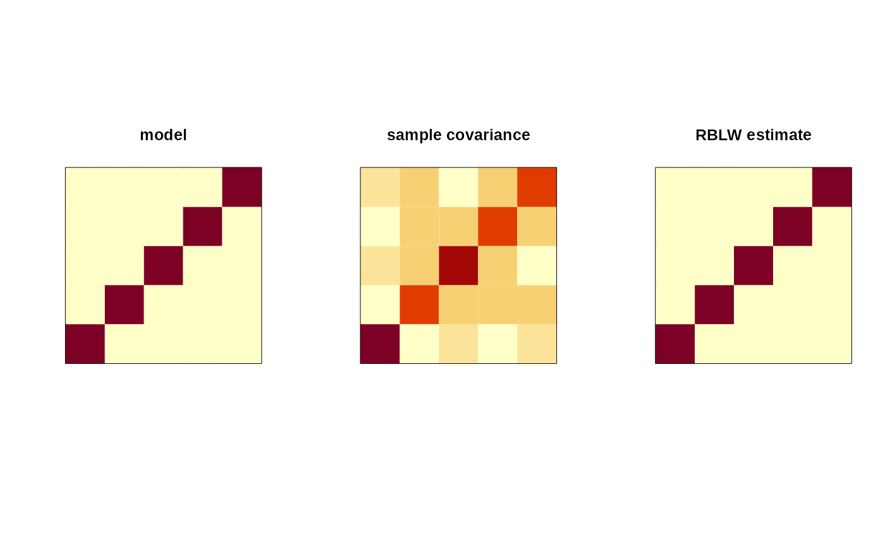

covRBLW.RdAuthors propose to estimate covariance matrix by minimizing mean squared error with the following formula, $$\hat{\Sigma} = \rho \hat{F} + (1-\rho) \hat{S}$$ where \(\rho \in (0,1)\) a control parameter/weight, \(\hat{S}\) an empirical covariance matrix, and \(\hat{F}\) a target matrix. It is proposed to use a structured estimate \(\hat{F} = \textrm{Tr} (\hat{S}/p) \cdot I_{p\times p}\) where \(I_{p\times p}\) is an identity matrix of size \(p\).
covRBLW(X)an \((n\times p)\) matrix whose rows are observations.
a named list containing:
a \((p\times p)\) covariance matrix.
an estimate for convex combination weight.
Chen Y, Wiesel A, Eldar YC, Hero AO (2010). “Shrinkage Algorithms for MMSE Covariance Estimation.” IEEE Transactions on Signal Processing, 58(10), 5016--5029. ISSN 1053-587X, 1941-0476.
## SIMPLE EXAMPLE ---------------------------------------
## generate a toy data from 5-dimensional standard normal
n = 25
p = 5
dat = matrix(stats::rnorm(n*p), ncol=p)
## estimate
Sraw = coper::cov(dat)$S
Snow = coper::covRBLW(dat)$S
## true model parameter from standard normal
I = diag(5)
## visualize
opar <- par(no.readonly=TRUE)
par(mfrow=c(1,3), pty="s")
image(I, xaxt='n', yaxt='n', main="model")
image(Sraw, xaxt='n', yaxt='n', main="sample covariance")
image(Snow, xaxt='n', yaxt='n', main="RBLW estimate")

par(opar)
if (FALSE) {
## EXPERIMENT -------------------------------------------
## now, we want to see how 'rho' is determined contingent
## on the number of observations available.
## define a sequence : varying number of observations
vec_sam = seq(from=5, to=200, by=5)
## we will record 'rho' and 'norm differences'
vec_rho = rep(0, length(vec_sam))
vec_diff = rep(0, length(vec_sam))
## iterate
for (i in 1:length(vec_sam)){
# data generation & run
dat_norun <- matrix(rnorm(5*vec_sam[i]), ncol=5)
out_norun <- coper::covRBLW(dat_norun)
# record
vec_rho[i] = out_norun$rho
vec_diff[i] = norm(out_norun$S - diag(5), "f")
}
## visualize
opar <- par(no.readonly=TRUE)
par(mfrow=c(1,2))
plot(vec_sam, vec_rho, main="estimated rhos",
lwd=2, type="b", col="red")
plot(vec_sam, vec_diff, main="Frobenius error",
lwd=2, type="b", col="blue")
par(opar)
}